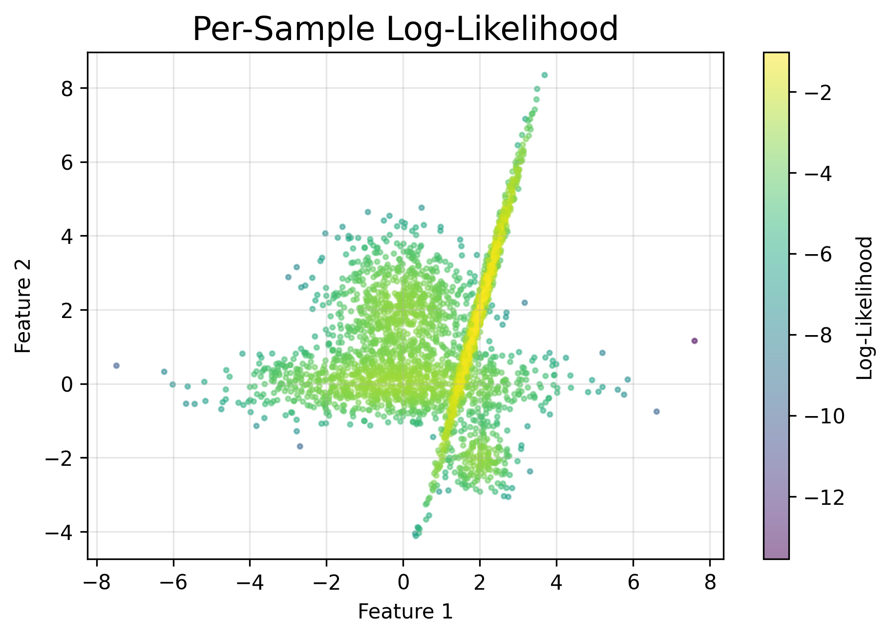

Tutorial: A Gaussian Mixture Model
In this tutorial, we demonstrate how to use the GaussianMixture class:
Fit the GMM with various covariance types (full, diag, spherical, tied).
Explore different initialization methods (random, points, kpp, kmeans, maxdist).
Visualize model results, including responsibilities and generated samples.
[9]:
import torch
import numpy as np
import matplotlib.pyplot as plt
from matplotlib.patches import Ellipse
from matplotlib.colors import ListedColormap
import importlib
import os
import sys
sys.path.append('../../..')
#print(os.listdir("../../.."))
import utils.gmm
import utils.metrics
importlib.reload(utils.gmm)
importlib.reload(utils.metrics)
from utils.gmm import GaussianMixture
device = 'cuda' if torch.cuda.is_available() else 'cpu'
random_state = 0
np.random.seed(random_state)
torch.manual_seed(random_state)
[9]:
<torch._C.Generator at 0x7f4f1c0732b0>
Let’s generate four clusters in 2D with different covariances.
[10]:
n_samples = [1000, 1000, 1000, 1000]
centers = [np.array([0, 0]),
np.array([0, 2]),
np.array([2, 0]),
np.array([2, 2])]
covs = [
np.array([[0.0, -0.5], [1.5, 0.5]]), # full covariance example
0.7 * np.eye(2), # spherical-like
0.5 * np.eye(2), # smaller spherical-like
np.array([[0.0, 0.2], [0.4, 1.7]]) # full covariance example
]
components = []
for n, center, cov in zip(n_samples, centers, covs):
# Generate multivariate normal data
samples = np.dot(np.random.randn(n, 2), cov) + center
components.append(samples)
X = np.vstack(components) # shape (4000, 2)
X_tensor = torch.tensor(X, dtype=torch.float32, device=device)
n_features = X.shape[1]
n_components = len(n_samples)
[11]:
def plot_gmm_results(
gmm,
X,
labels,
ax=None,
title='GMM Results',
init_means=None
):
"""
Plot data points colored by cluster, the final GMM ellipses,
and optionally the initial means in red.
Parameters
----------
gmm : GaussianMixture
A fitted GaussianMixture instance.
X : np.ndarray
Original 2D data (shape: (N, 2)).
labels : np.ndarray
Predicted cluster labels for each point in X.
ax : matplotlib.axes.Axes
Axes on which to plot. If None, uses current Axes.
title : str
Title for the subplot.
init_means : torch.Tensor or None
Initial means (k, 2) if you want to display them in red '+'.
"""
if ax is None:
ax = plt.gca()
# Distinct colors for each cluster
cmap = ListedColormap(plt.cm.tab10(np.linspace(0, 1, gmm.n_components)))
# Plot data points by predicted labels
for i, color in zip(range(gmm.n_components), cmap.colors):
mask = (labels == i)
ax.scatter(X[mask, 0], X[mask, 1], c=[color], s=2, label=f'Cluster {i}', alpha=0.6)
# Plot final means & covariances
for n, color in zip(range(gmm.n_components), cmap.colors):
mean = gmm.means_[n].detach().cpu().numpy()
# Determine the covariance based on gmm.covariance_type
if gmm.covariance_type == 'full':
cov = gmm.covariances_[n].detach().cpu().numpy()
elif gmm.covariance_type == 'diag':
diag_vals = gmm.covariances_[n].detach().cpu().numpy()
cov = np.diag(diag_vals)
elif gmm.covariance_type == 'spherical':
var = gmm.covariances_[n].detach().cpu().item() # scalar
cov = np.eye(gmm.n_features) * var
elif gmm.covariance_type == 'tied_full':
cov = gmm.covariances_.detach().cpu().numpy() # single shared matrix
elif gmm.covariance_type == 'tied_diag':
diag_vals = gmm.covariances_.detach().cpu().numpy()
cov = np.diag(diag_vals)
elif gmm.covariance_type == 'tied_spherical':
var = gmm.covariances_.detach().cpu().item()
cov = np.eye(gmm.n_features) * var
else:
raise ValueError(f"Unsupported covariance_type: {gmm.covariance_type}")
# Decompose covariance to plot an ellipse
vals, vecs = np.linalg.eigh(cov)
order = vals.argsort()[::-1]
vals, vecs = vals[order], vecs[:, order]
angle = np.degrees(np.arctan2(*vecs[:, 0][::-1]))
# Plot ellipses for 1,2,3 std devs
for std_dev, alpha_ellipse in zip([1, 2, 3], [0.3, 0.2, 0.1]):
width, height = 2 * np.sqrt(vals) * std_dev
e = Ellipse(
mean,
width=width,
height=height,
angle=angle,
facecolor=color,
alpha=alpha_ellipse,
edgecolor=None
)
ax.add_patch(e)
# Mark final mean as black circle
ax.plot(mean[0], mean[1], 'ko', markersize=4)
# Optionally plot the initial means in red
if init_means is not None:
init_means_cpu = init_means.detach().cpu().numpy()
for i in range(gmm.n_components):
ax.plot(init_means_cpu[i, 0], init_means_cpu[i, 1],
'r+', markersize=10, markeredgewidth=2)
ax.set_title(title)
ax.axis('equal')
[12]:
# Initialize the GMM
gmm = GaussianMixture(
n_features=n_features,
n_components=n_components,
covariance_type='full',
tol=1e-4,
reg_covar=1e-6,
max_iter=1000,
init_params='random',
cov_init_method='eye',
weights_init=None,
means_init=None,
covariances_init=None,
n_init = 5,
random_state=None,
warm_start=False,
verbose=True,
verbose_interval=10,
device='cpu',
)
# Fit the GMM
gmm.fit(X_tensor)
# Get predictions
y_pred = gmm.predict(X_tensor)
# Compute per-sample log-likelihoods
log_probs = gmm.score_samples(X_tensor)
# Get probabilities for each sample for each component
probs = gmm.predict_proba(X_tensor)
probs = probs.detach()
# Generate new samples
n_samples_to_generate = 4000
gmm_samples, gmm_labels = gmm.sample(n_samples_to_generate)
gmm_samples = gmm_samples.detach().cpu().numpy()
gmm_labels = gmm_labels.detach().cpu().numpy()
# Compute probabilities for each generated sample
generated_probs = gmm.predict_proba(torch.tensor(gmm_samples, dtype=torch.float32).to(device))
generated_probs = generated_probs.detach().cpu().numpy()
print('Mean per-sample log-likelihood:', gmm.score(X_tensor))
print('Std per-sample log-likelihood:', torch.std(log_probs).item())
print('Lower bound:', gmm.lower_bound_)
print('Number of iterations:', gmm.n_iter_)
print('Sum of log-likelihoods:', torch.sum(log_probs).item())
[InitRun 0] Iter 0, lower bound: -5.38992
[InitRun 0] Iter 10, lower bound: -3.21788
[InitRun 0] Iter 20, lower bound: -3.18038
[InitRun 0] Iter 30, lower bound: -2.77929
[InitRun 0] Converged at iteration 38, lower bound=-2.73262
[InitRun 1] Iter 0, lower bound: -3.91078
[InitRun 1] Iter 10, lower bound: -3.17127
[InitRun 1] Iter 20, lower bound: -3.12612
[InitRun 1] Iter 30, lower bound: -2.74164
[InitRun 1] Converged at iteration 38, lower bound=-2.73285
[InitRun 2] Iter 0, lower bound: -4.41680
[InitRun 2] Iter 10, lower bound: -3.22166
[InitRun 2] Iter 20, lower bound: -3.20861
[InitRun 2] Iter 30, lower bound: -3.20091
[InitRun 2] Iter 40, lower bound: -2.74187
[InitRun 2] Converged at iteration 50, lower bound=-2.73273
[InitRun 3] Iter 0, lower bound: -4.80912
[InitRun 3] Iter 10, lower bound: -3.16844
[InitRun 3] Iter 20, lower bound: -3.06464
[InitRun 3] Iter 30, lower bound: -2.73293
[InitRun 3] Converged at iteration 31, lower bound=-2.73272
[InitRun 4] Iter 0, lower bound: -4.88786
[InitRun 4] Iter 10, lower bound: -3.23513
[InitRun 4] Iter 20, lower bound: -3.03600
[InitRun 4] Iter 30, lower bound: -2.75072
[InitRun 4] Iter 40, lower bound: -2.73286
[InitRun 4] Converged at iteration 41, lower bound=-2.73266
Mean per-sample log-likelihood: -2.7324881553649902
Std per-sample log-likelihood: 1.2182121276855469
Lower bound: -2.732619047164917
Number of iterations: 38
Sum of log-likelihoods: -10929.9521484375
[13]:
# Define your color map for up to 4 components (adjust if needed)
colors = ['#1b9e77', '#d95f02', '#7570b3', '#e7298a']
color_map = {label: color for label, color in enumerate(colors)}
# 1) Prepare your figure
fig, axs = plt.subplots(1, 3, figsize=(18, 6))
###############################################################################
# Plot (1) - Per-Sample Log-Likelihood
###############################################################################
scatter = axs[0].scatter(
X[:, 0],
X[:, 1],
c=log_probs,
cmap='viridis',
s=2
)
axs[0].set_title('Per-Sample Log-Likelihood')
axs[0].set_xlabel('Feature 1')
axs[0].set_ylabel('Feature 2')
cbar = fig.colorbar(scatter, ax=axs[0])
cbar.set_label('Log-Likelihood')
###############################################################################
# Plot (2) - Predicted Cluster Labels
###############################################################################
for cluster in range(n_components):
cluster_points = X[y_pred == cluster]
axs[1].scatter(
cluster_points[:, 0],
cluster_points[:, 1],
label=f'Cluster {cluster + 1}',
color=color_map[cluster],
s=2
)
axs[1].set_title('Predicted Cluster Labels')
axs[1].set_xlabel('Feature 1')
axs[1].set_ylabel('Feature 2')
axs[1].legend(title="Clusters", loc='upper right')
###############################################################################
# Plot (3) - Generated Samples from the GMM
###############################################################################
for cluster in range(n_components):
cluster_samples = gmm_samples[gmm_labels == cluster]
axs[2].scatter(
cluster_samples[:, 0],
cluster_samples[:, 1],
label=f'Cluster {cluster + 1}',
color=color_map[cluster],
s=2
)
axs[2].set_title('Generated Samples from GMM')
axs[2].set_xlabel('Feature 1')
axs[2].set_ylabel('Feature 2')
axs[2].legend(title="Clusters", loc='upper right')
###############################################################################
# Final Layout & Save
###############################################################################
plt.tight_layout()
plt.show()

[14]:
# Observed Data
fig, axs = plt.subplots(2, 2, figsize=(12, 10))
for k, ax in enumerate(axs.ravel()):
prob_k = probs[:, k]
scatter = ax.scatter(X[:, 0], X[:, 1], c=prob_k.detach().cpu().numpy(), cmap='viridis', s=2)
ax.set_title(f'Component {k+1} Probability')
ax.set_xlabel('Feature 1')
ax.set_ylabel('Feature 2')
cbar = fig.colorbar(scatter, ax=ax)
cbar.set_label('Probability')
fig.suptitle("Observed Data: Probability Distributions Across GMM Components", fontsize=16)
plt.tight_layout(rect=[0, 0, 1, 0.96])
plt.show()
# Generated Samples
fig, axs = plt.subplots(2, 2, figsize=(12, 10))
for k, ax in enumerate(axs.ravel()):
prob_k = generated_probs[:, k]
scatter = ax.scatter(gmm_samples[:, 0], gmm_samples[:, 1], c=prob_k, cmap='inferno', s=2)
ax.set_title(f'Component {k+1} Probability')
ax.set_xlabel('Feature 1')
ax.set_ylabel('Feature 2')
cbar = fig.colorbar(scatter, ax=ax)
cbar.set_label('Probability')
fig.suptitle("Generated Samples: Probability Distributions Across GMM Components", fontsize=16)
plt.tight_layout(rect=[0, 0, 1, 0.96])
plt.show()


[15]:
cov_types = ['spherical', 'diag', 'full', 'tied_full', 'tied_diag', 'tied_spherical']
fig, axs = plt.subplots(2, 3, figsize=(12, 8))
axs = axs.flatten()
for ax, cov_type in zip(axs, cov_types):
gmm = GaussianMixture(
n_features=2,
n_components=4,
covariance_type=cov_type,
init_params='kmeans',
random_state=random_state,
device=device
)
gmm.fit(X_tensor)
labels_pred = gmm.predict(X_tensor).cpu().numpy()
plot_gmm_results(gmm, X, labels_pred, ax=ax, title=f'Covariance: {cov_type}')
plt.tight_layout()
plt.show()

[16]:
cov_types = ['full', 'diag', 'spherical']
init_methods = ['random', 'points', 'kpp', 'kmeans', 'maxdist']
from utils.gmm_init import GMMInitializer
def get_init_means(method, data, k):
"""
Returns initial means for a given method from GMMInitializer.
"""
if method == 'random':
return GMMInitializer.random(data, k)
elif method == 'points':
return GMMInitializer.points(data, k)
elif method == 'kpp':
return GMMInitializer.kpp(data, k)
elif method == 'kmeans':
return GMMInitializer.kmeans(data, k)
elif method == 'maxdist':
return GMMInitializer.maxdist(data, k)
else:
raise ValueError(f"Unknown init method: {method}")
import matplotlib.pyplot as plt
cov_types = ['full', 'diag', 'spherical']
init_methods = ['random', 'points', 'kpp', 'kmeans', 'maxdist']
fig, axs = plt.subplots(
nrows=len(cov_types),
ncols=len(init_methods),
figsize=(25, 15) # adjust as you like
)
for row_idx, cov_type in enumerate(cov_types):
for col_idx, method in enumerate(init_methods):
ax = axs[row_idx, col_idx]
# 1) Get initial means from our GMMInitializer
init_means = get_init_means(method, X_tensor, k=4)
# 2) Create GMM with 'means_init' so it uses these means
gmm = GaussianMixture(
n_features=2,
n_components=4,
covariance_type=cov_type,
means_init=init_means,
init_params=None, # or 'none' to bypass internal logic
random_state=42,
device=device
)
# 3) Fit the GMM on X_tensor
gmm.fit(X_tensor)
# 4) Predict cluster labels
labels_pred = gmm.predict(X_tensor).cpu().numpy()
# 5) Plot
title = f'Cov: {cov_type}, Init: {method}'
plot_gmm_results(gmm, X, labels_pred, ax=ax, title=title, init_means=init_means)
plt.tight_layout()
plt.show()
